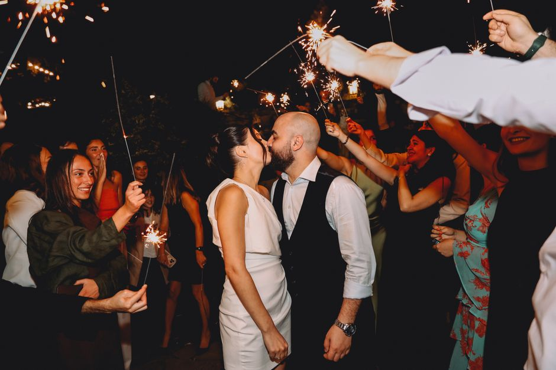

Capturing Your Love Story in Stunning Digital Cinema.
Cheilio Noria introduces you to an elite wedding videographer network dedicated to bringing your most cherished moments to life through breathtaking wedding films and comprehensive event videography.
Our Videography Services
Discover how a professional wedding videographer can transform fleeting moments into a cinematic legacy that lasts generations.

The Cinematic Wedding Video
A cinematic wedding video goes beyond mere documentation. It is an artistic endeavor that weaves together the sights, sounds, and emotions of your day into a compelling narrative. Using state-of-the-art equipment, the focus is on light, composition, and authentic emotion, ensuring your wedding film feels like a premier movie screening of your own love story.
- Multi-camera angles for dynamic storytelling
- High-definition audio capture for vows and speeches
- Professional color grading and editing

Comprehensive Event Videography
Your wedding is more than just the ceremony; it's a weekend of celebration. Comprehensive event videography covers the entire spectrum of your celebration. From the intimate moments of the rehearsal dinner to the energetic dance floor at the reception, every pivotal chapter is seamlessly documented.
Whether you are planning an intimate elopement or a grand multi-day cultural celebration, the approach remains the same: unobtrusive, respectful, and highly observant, ensuring no vital memory goes unrecorded.

The Signature Wedding Film
The culmination of the videography process is the signature wedding film. This is a meticulously crafted, highly polished edit that distills the essence of your event into a beautiful, shareable format. It highlights the peaks of emotion, the grandeur of the venue, and the intimate connections between you and your guests.
Request film availabilityOur Vision & Mission
Elevating the standard of event storytelling.
At Cheilio Noria, our promotional platform is dedicated to connecting engaged couples with the finest wedding videographer talent available. We recognize that wedding videography is not just about pressing record; it is about preserving a legacy.
We champion a cinematic approach to event videography, focusing on narrative-driven, emotionally resonant films. By highlighting top-tier services, we aim to help you secure a wedding film that you will treasure for a lifetime, ensuring your unique love story is captured with the utmost artistry and care.
Our curated insights and promotional materials guide you toward making an informed decision for your big day, emphasizing quality, reliability, and creative excellence.


Frequently Asked Questions
Insights into the wedding videography process.
What is the difference between a traditional wedding video and a cinematic wedding film?
A traditional wedding video often documents the day chronologically from start to finish with minimal editing. A cinematic wedding film, however, is heavily edited to create a narrative. It utilizes advanced color grading, carefully selected soundtracks, and non-linear storytelling to evoke emotion and feel like a professional movie.
How far in advance should we book a wedding videographer?
It is highly recommended to book your wedding videographer at least 9 to 12 months in advance. Top-tier professionals' schedules fill up quickly, especially during peak wedding seasons (Spring and Fall). Securing your date early ensures you get the cinematic coverage you desire.
Does event videography include audio capture for vows and toasts?
Yes, professional event videography relies heavily on high-quality audio. Dedicated microphones are typically placed on the groom and the officiant during the ceremony, and direct feeds are pulled from the DJ or band's soundboard during the reception to ensure toasts and speeches are crystal clear in the final edit.
Will the videographer get in the way of our photographer?
Experienced professionals know how to work seamlessly alongside photographers as a unified media team. They communicate throughout the day to ensure both photo and video elements are captured without stepping into each other's shots, maintaining an unobtrusive presence.
How is the final wedding film delivered?
Delivery methods vary by provider, but modern standards usually involve a digital delivery platform. You will typically receive a secure online link to view, share, and download your high-definition cinematic wedding video directly to your devices.
Client Experiences
See what couples are saying about premium wedding films.
"The cinematic wedding video we received was nothing short of a masterpiece. Every emotion, every laugh, and every tear was captured perfectly. It truly felt like watching a movie of our own lives. Highly recommend investing in professional videography."
— Sarah & James (2026)
"We were initially unsure if we needed event videography, but it was the best decision we made. The way they edited the speeches over the footage of our guests laughing and dancing was brilliant. A stunning wedding film we watch every anniversary."
— Michael & David (2026)
"The attention to detail was incredible. They were completely unobtrusive throughout the day, yet somehow managed to catch every important second. The audio quality during the ceremony was pristine. A true wedding videographer professional."
— Elena & Marcus (2026)
Request Availability
Connect with us to begin planning your cinematic wedding film.